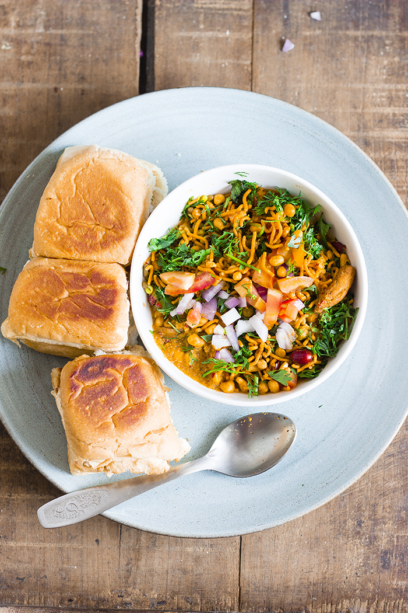
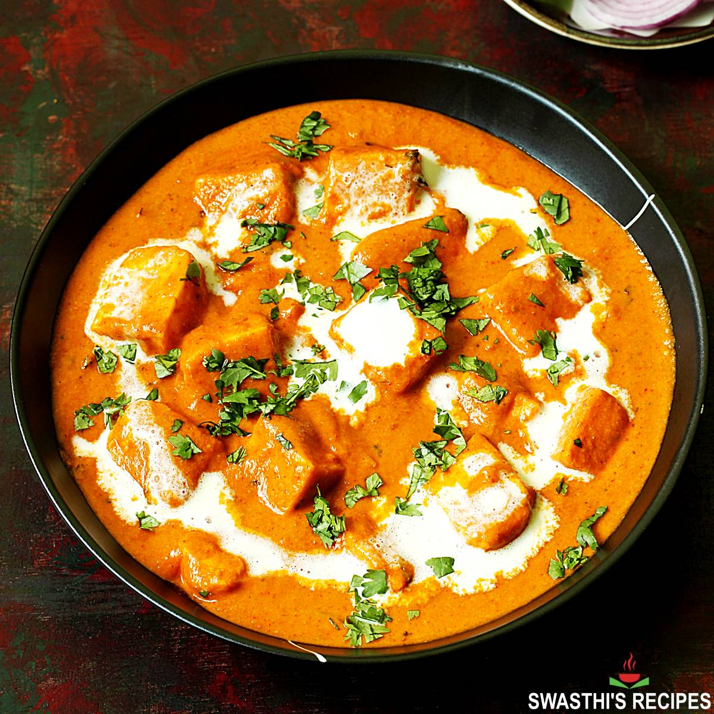
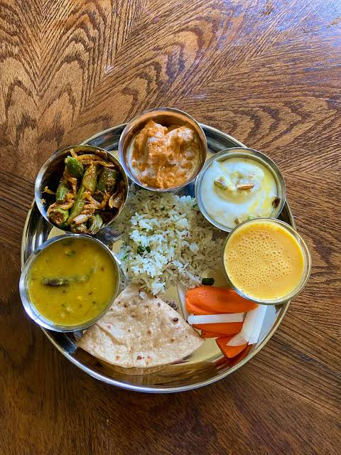

PopularMisal Pav
₹120A spicy Maharashtrian classic served with soft pav.
I love preparing fresh, homemade meals using traditional recipes and simple ingredients.
MADE WITH LOVE
Explore homemade dishes prepared by this cook.

PopularA spicy Maharashtrian classic served with soft pav.
Traditional sweet flatbread filled with jaggery and lentils.

Creamy paneer cooked in a rich tomato gravy.

A wholesome meal with roti, rice, dal and sabzi.
Try searching with another dish name.